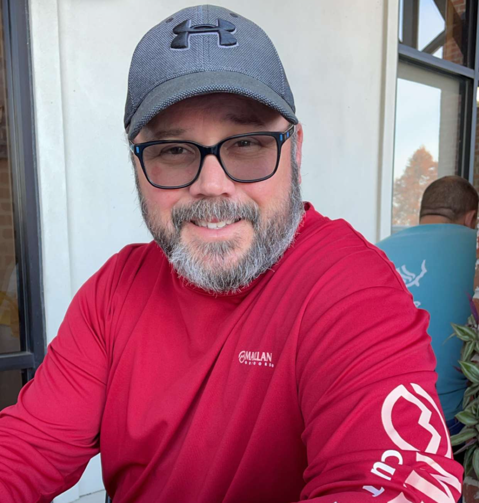

Kevin John Meyers
Founder & CEO
OUR STORY
Coastal Construction Services was born from a deep-rooted passion for the land and a commitment to excellence that spans generations. Growing up in Southern Louisiana, I learned early on that the earth beneath our feet is more than just dirt—”it's the foundation of everything we build, grow, and create.
After years of working alongside some of the best operators and contractors in the Acadiana area, I recognized a need for a dirt work company that combined modern equipment with traditional Louisiana values. In 2014, I founded Coastal Construction Services with a simple promise: to treat every project like it's our own land we're working.
What started as a one-man operation with a single piece of equipment has grown into a trusted name throughout the region. But our core values haven't changed. We still believe in honest work, fair pricing, and building relationships that last longer than any project.
OUR MISSION
At Coastal Construction Services, our mission is straightforward: to provide the Acadiana area with reliable, professional dirt work services that exceed expectations every single time.
We understand that whether you're building a home, expanding your farm, or developing commercial property, the groundwork is critical. That's why we approach every job with the same level of care and precision, regardless of size. From the smallest residential pad to large-scale commercial developments, we bring the same commitment to quality.
We're not just moving dirt—”we're building foundations for dreams, creating solutions for challenges, and helping our community grow stronger, one project at a time.
WHAT WE STAND FOR
INTEGRITY
We do what we say we'll do, when we say we'll do it. Our word is our bond, and we stand behind every project we complete.
QUALITY
We never cut corners. Every job is done right the first time, using proper techniques and the best equipment available.
COMMUNITY
We're proud to serve the Acadiana area. This is our home, and we're invested in its success and growth.
EXPERIENCE
Years of hands-on work have taught us how to handle Louisiana's unique soil conditions and weather challenges.
WHY CHOOSE COASTAL?
When you work with Coastal Construction Services, you're not just hiring a contractor—”you're partnering with someone who understands the land, respects the craft, and cares about the outcome as much as you do.
We've built our reputation on reliable service, quality workmanship, and treating every customer like family. Whether it's your first project or your fiftieth, you'll get the same level of dedication and expertise that has made us a trusted name in Southern Louisiana.
Let's build something great together.